Wayfinding design is essential to the interaction of people and cities, and augmented reality (AR) is newly emerging for consumers as a form of human-computer interaction. This module will explore what potential there might be to innovate wayfinding practices with AR.
Wayfinding isn't just a sign that points to a destination—it's systematic and considers multiple formats for helping people understand their surroundings.
These guidelines can inform the design of spaces to allow for good wayfinding, and go beyond solutions that are augmented to a space.
Make different locations memorable so people remember whether they’ve been to a place before, and provide a reference point. e.g. painting each of the north/south/east/west entrances a different colour.
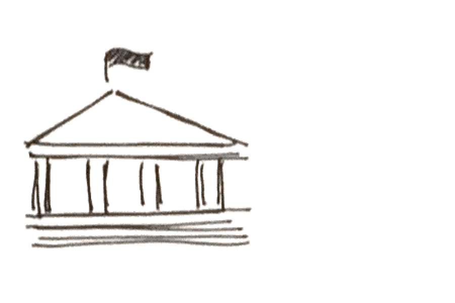Landmarks help people describe where they are and provide a relative location. Also, they provide a shared language amongst people who might be communicating about their location.
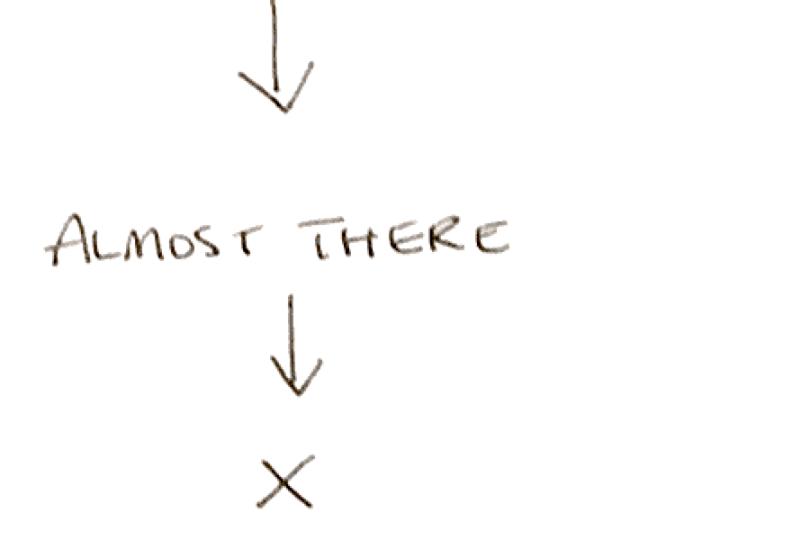Paths should be continuous from start to end as not to lose people in the fray. Confirming progress to a destination can help relieve stress and improve trust in the wayfinding system.
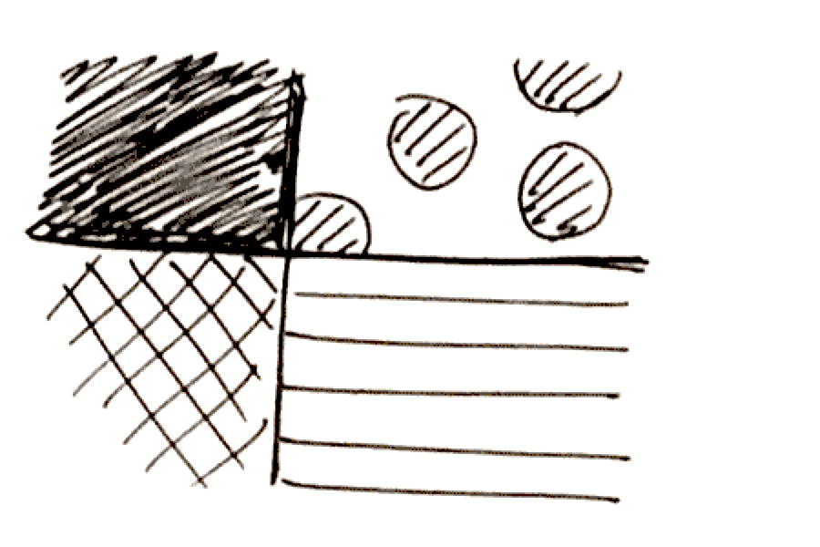Subdivide large spaces into smaller regions to provide another set of cues for people to understand their locations.
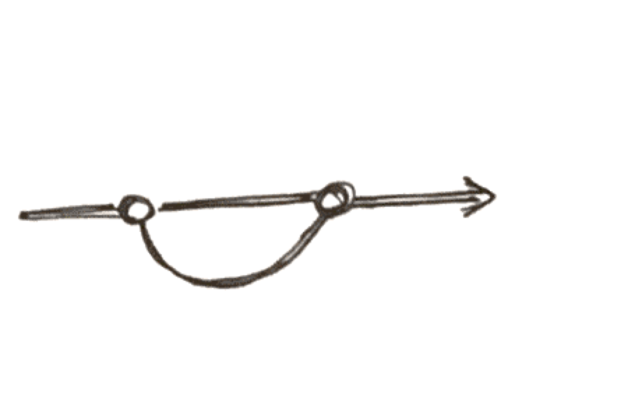Provide a coherent route for every alternative path, and give opportunities to take detours but also return to the main route.
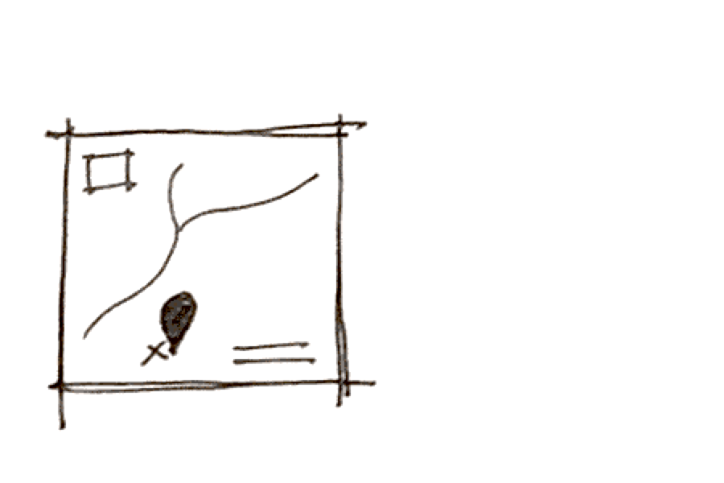Provide maps/vistas so that people can understand their relative location with respect to the entire route, the size of the space, and all possible destinations.
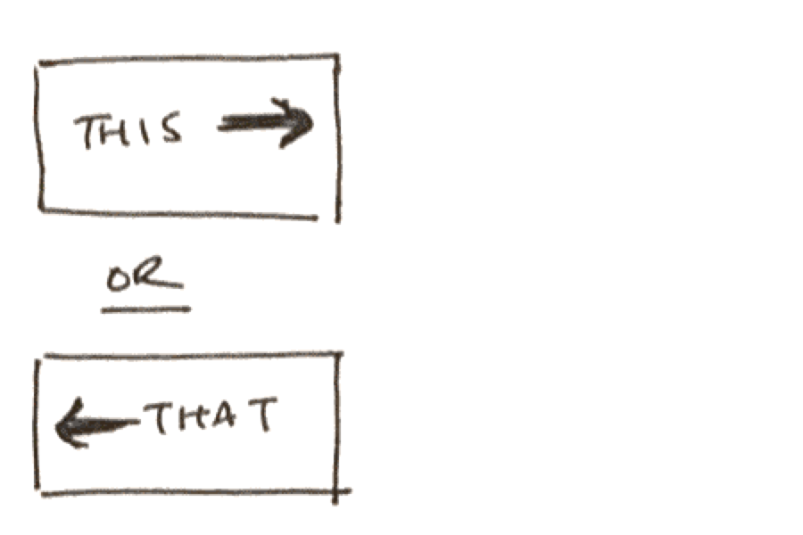Signs help guide people’s decisions and provide transparency to the destinations along each of the different routes. The number of signs should be taken into careful consideration since space may be scarce, and having too many signs may be confusing.
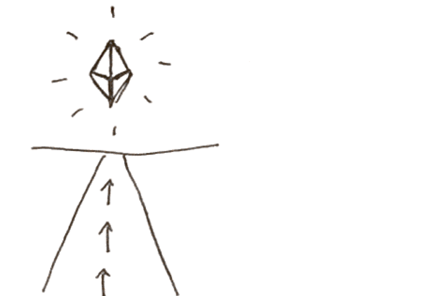Provide an extensive view or sneak peek as to what’s ahead to invite people along the route. Also termed a “visual magnet”.
A wayfinding system includes a network of signage, with signs of varying utility and purpose. There are four types of signs used for wayfinding.
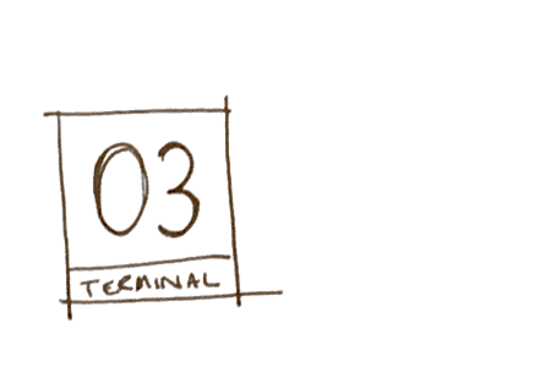Gives the name and function of the space you’re in. The signs are functional, but can also be descriptive through branding and use of graphic design. Provides indication of the transition between one space to another.
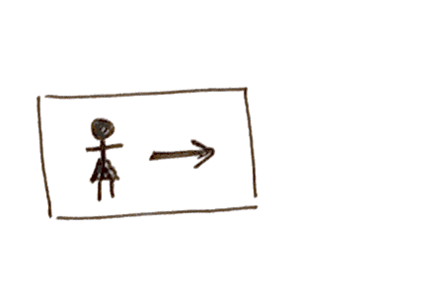Keeps people on the route they’re on and can point them towards other destinations. Usually includes arrows, names of destinations and other visual cues.
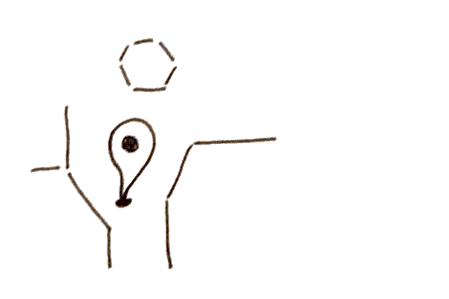Provide an overview of a person’s surroundings, typically involves a map and an indicator of the person’s location on the map: “You are here.”
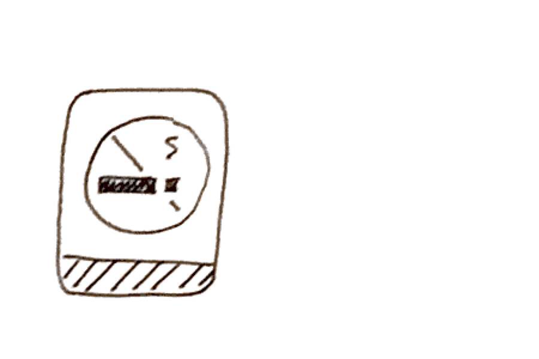Provide the rules of the space, and warn people of any potential dangers and safety hazards. Can indicate areas where people should not go.
New York City’s wayfinding signage, called WalkNYC includes a family of physical maps and signage with a unified visual language to help pedestrians navigate the city. The mapping system takes advantage of survey views to allow people to orient themselves amongst the streets, and the orientation of the maps are adjusted to the direction that the user is facing while viewing the map.
Wayfinding is integrated into the library’s building structure, as well as the furniture used throughout. The signage has a unique, but also consistent visual identity which makes individual signs salient, and makes subspaces memorable. The library also takes advantage of colour to give individual sections of the library unique identities.
The university employs a wayfinding systems that uses colours with high contrast to the buildings it helps navigate through. Additionally, the wayfinding design goes beyond signage by adapting spaces with unique identities to aid in coherent navigation. The figure above shows a navigation of a workshop with numbered stations that the defined path helps people find.
MappedIn’s interactive maps replace traditional, static signage with interactive interfaces that can help users orient themselves and visualize the route they need to take to get to their destination. The hardware is usually placed in contained environments like malls and campus buildings, and provides precise navigation to multiple destinations, as opposed to just one major destination.
Points is a rotating dynamic destination/direction sign. The sign changes destinations and directions based on events and time of day determined through geo-tagged data from sources like Twitter, Foursquare and local events. Dynamic signage can be advantageous for special events and for emergencies when people need guiding.
Designed to be touch-free and taking advantage of sensors and microphone input, LQD’s Palo is a console that not only provides maps and wayfinding information, but also provides wi-fi and essential community information that can be transmitted to users’ smartphones.
In many ways, a wayfinding system is an interface itself. At the very least, wayfinding systems help people navigate the complex interface of the city. Since cities have many more inputs and outputs, and overall, much more variance than say, an iPhone app or a TV screen, wayfinding solutions can provide as an example of an interface with an utmost need for clarity and universality. Some key parallels to make between wayfinding systems and digital interfaces are as follows.
Providing signage amongst the chaos of urban environments forces wayfinding designers to make signage that is simple and reflects the identity of the entire system of signage. Of all the tasks that are possible on the internet, people don’t want to spend their time looking for the actions they already know they want to complete. Also, important messaging like instructions, errors, and warnings should contain the important facts only, and be presented in a way that most users understand.
Providing too many choices in any circumstance can cause decision paralysis for users. Especially for tasks that need to be done that split the user’s attention span, choices should be simple and few. Copy and symbols that indicate navigational options should also be succinct and accurately portray the navigational choice, an analogue for a wayfinding destination.
In digital interfaces, users should always be given the option to change their decisions, and their experiences should be coherent regardless of the choices that they make. Additionally, when possible, there should be the option to undo choices. If not, it should be made clear that the choice is irreversible and the consequences of the user’s choice.
The same way sightlines and provide insight into the proceeding parts of a wayfinding route, previews of links (through hovering) can help users understand what they are clicking into before they actually do it. Also, in long workflows like onboarding or filling out forms, previews can keep the process transparent and help users understand what the end goal is relative to the list of tasks they’re required to complete.
By having a design system that defines different types of layouts and a typography system, an interface can have fewer surprises for users. Developing consistent styles for banners and a global navigational structure can help new users understand where to find important messaging and how to get around an interface they might not yet be familiar with.
Augmented reality (AR) works by imposing a computer image on a view of reality. Also related is the field of virtual reality (VR), which is a superset of technologies that includes AR. The difference, however, is that AR supplements reality with virtual features, whereas VR supplants reality completely.
While AR technologies have existed since the origins of computing, they were mostly only used for research, training programs, and some gaming applications. With modern smartphone usage, AR applications have new potential to be used by the masses of average consumers.
The following principles adapt existing usability principles for human-computer interaction and apply them to the design of augmented reality systems.
AR allows for the complexity of creating affordances in 3D space, and for users to do 3D manipulation in a way that is more intuitive than using a 2D interface.
When designing AR systems, virtual elements should be well-aligned to physical elements as not to increase the amount of cognitive overhead for the user. If the AR interface integrates well with the surrounding environment, users may be able to focus less on the interface itself, and more on the task at hand.
As with designing most systems, minimizing the number of steps involved in a task prevents users from becoming fatigued. Particularly in AR experiences, users are at risk of disorientation and motion sickness after prolonged use, so additional caution should be taken.
AR, as a new technology, may have interactions that are not yet familiar to most users. Therefore, any novel interactions should either reflect behaviours they use in the real world, or mimic computer interactions they’re already used to.
Since AR is more immersive and requires higher engagement than traditional screen interfaces, the system should bring some level of satisfaction to users while they’re interacting with it.
AR provides opportunities for multi-modal inputs and outputs. Engaging different modalities can make the system easier to use for tasks that are best completed in a certain mode. For example, long texts are easier to speak than they are to type.
Unfortunately, the visualization and multimodal nature of AR can require high performance hardware and draw large amounts of computational resources. Therefore, there are trade-offs between complexity/richness and responsiveness of the system.
Tracking and spatial registration of the real world needs to be highly accurate in order for the interface to be effective. The system, therefore, needs to tolerate for changing environmental conditions and errors made by the user to provide a consistent experience.
These are some existing research studies and applications of augmented reality in wayfinding.
Source: Visualization in Engineering
Researchers from the Kyung Hee University, Curtin University, and University of California Berkeley designed an AR system that requires users to orient the system by scanning quick reference (QR) codes on their smartphones. The software then augments salient green arrows to direct users to the closest kitchen in the hospital. The research team encountered difficulties in ensuring that the QR markers could be scanned in all light conditions. The arrows increased size as users walked closer to their destination which proved to be a useful cue.
Given that augmented reality has the proven ability to customize the ways people interact with the built environment, there seems to be an opportunity to explore its potential in the realm of wayfinding. While the approach that should probably be taken to improving wayfinding should consider its execution only after different types of technology have been considered and eliminated, this exploration does not seek to say that AR should be used absolutely and indefinitely. Instead, it begs to ask where the intersection of these two disciplines might exist, perhaps providing insight into if not AR, then what benefits might a more suitable technology need to provide?